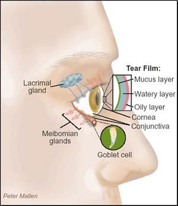
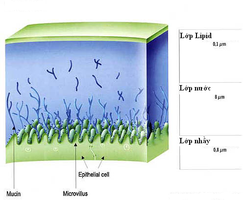
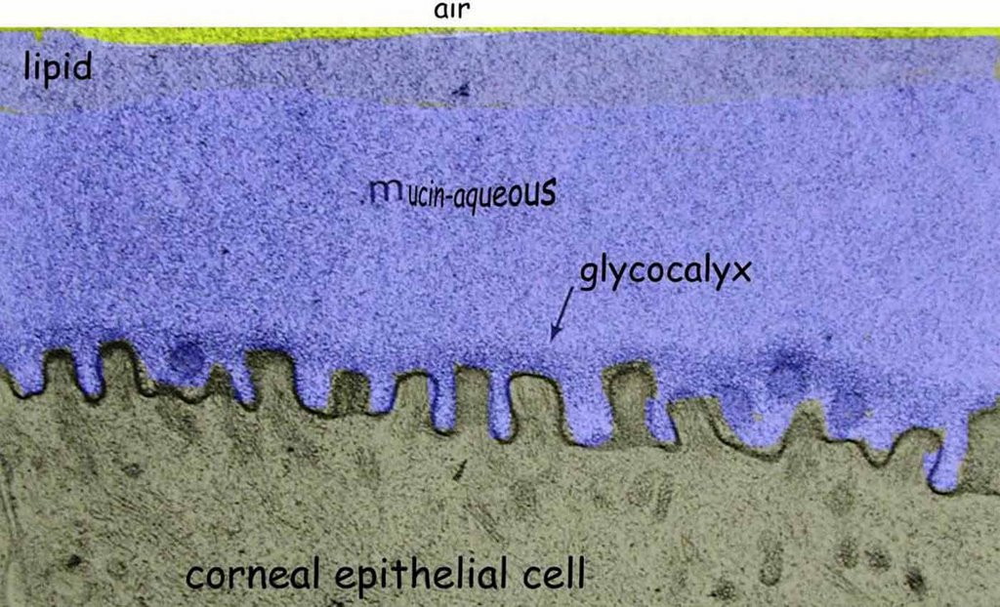

Tear film
* Định nghĩa:
+ Màng film nước mắt

Hình: Mô tả màng film nước mắt và liên quan giữa các lớp nước mắt với nguồn gốc của lớp film đó (lưu ý màu sắc tương đương giữa các tuyến và lớp nước mắt ví dụ: màu xanh lá cây là lớp trong cùng do những tế bào Goblet tiết ra)


Hình: Mô tả vi thể lớp nước mắt bám vào bề mặt biểu mô giác mạc